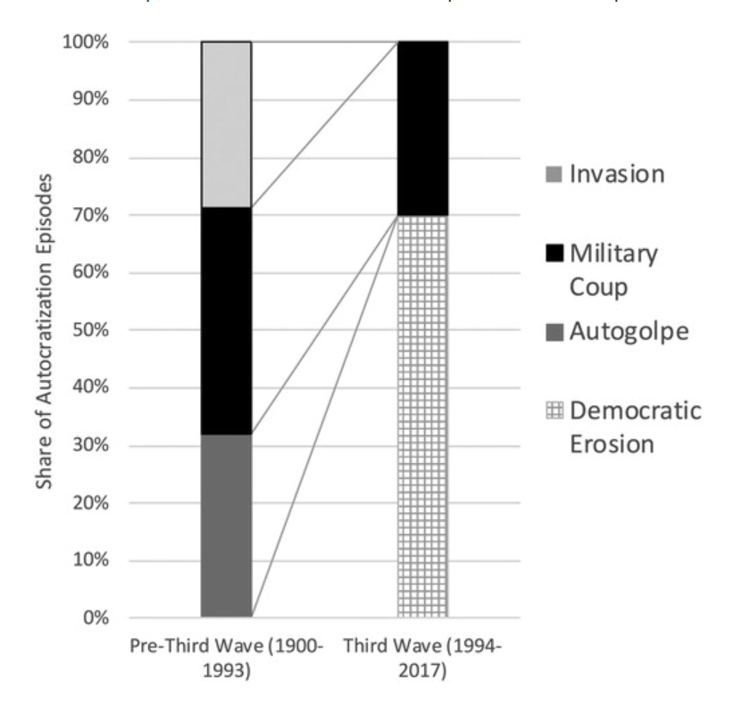
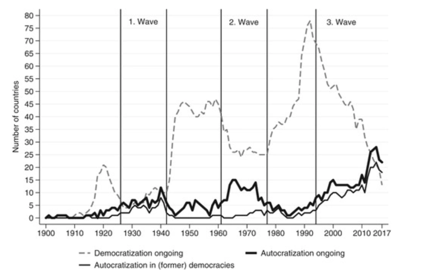

The ways in which autocrats come to power and democracies are destroyed are different today than they were before. Previously (1900 - 1993), autocrats seized power in a very obvious manner. They used tactics that involved violence, such as military coups and invasions, as well as obvious takeovers of power (e.g. autogolpe, in which a nation's leader, despite having come to power legally, makes the national legislature powerless and assumes powers not granted under normal circumstances). Today (1994 - Present), the rise of autocracies happens under the guise of democracy and free and fair elections. 70% of autocratization episodes take place through "democratic erosion". Democratic erosion involves the gradual demise of fair elections and exchanges of power, and the eventual reduction of democratic principles of governing.
In the 1980s and 1990s the world was in a state of democratic dominance. Unfortunately, as of 1994 we entered an era in which autocracies are on the rise and democracies are eroding. This trend is continuing world-wide.
The goal of our data visualizations is to help citizens stay informed about both the state of democracy in the world and in their country, as well as allow citizens to explore which factors may indicate that their country is changing for the better or for the worse in terms of the health of its democracy. Through this data, citizens can stay engaged and can understand which indicators to advocate for to preserve or improve the health of their democracy.
V-Dem’s index for liberal democracy consists of the Electoral Democracy Index (EDI) and the Liberal Component Index (LCI). EDI measures to what extent electoral democracy is achieved, while while LCI measures the support of democracy from supplements such as spread of power in the government and respect for civil liberties.
Our data visualizations focus on EDI. The V-Dem codebook (v9) states that EDI is operationalized as the following:
“The electoral principle of democracy seeks to embody the core value of making rulers responsive to citizens, achieved through electoral competition for the electorate’s approval under circumstances when suffrage is extensive; political and civil society organizations can operate freely; elections are clean and not marred by fraud or systematic irregularities; and elections affect the composition of the chief executive of the country. In between elections, there is freedom of expression and an independent media capable of presenting alternative views on matters of political relevance.” (Coppedge et al., 2019)
The scale goes from 0 - 1, respectively low to high electoral representative democracy.
There are other indicators that ladder up to the EDI measure. These indicators include:
In addition to EDI and the sub-indicators that create this measure, the V-Dem data set has many other relevant indicators. Depending on (1) the country you are looking at and (2) the years that you are viewing, different indicators may or may not be strongly correlated with electoral democracy, as measured by EDI. We recommend exploring to understand which indicators are relevant to the country of your interest, so that you can be more informed about issues that could be impacting the health of democracy in your country.
As an example, indicators such as ‘censorship of the media’ and ‘voting fraud,’ are currently correlated with EDI worldwide. However, these indicators had a much looser correlation in the First Wave of autocratization.
Anna Lührmann, Sandra Grahn, Richard Morgan, Shreeya Pillai, Staffan I. Lindberg. (2019) State of the world 2018: democracy facing global challenges. Democratization 0:0, pages 1-21.
Anna Lührmann, Staffan I. Lindberg. (2019) A third wave of autocratization is here: what is new about it?. Democratization 0:0, pages 1-19.
Coppedge, Michael, John Gerring, Carl Henrik Knutsen, Staffan I. Lindberg, Jan Teorell, David Altman, Michael Bernhard, M. Steven Fish, Adam Glynn, Allen Hicken, Anna Lührmann, Kyle L. Marquardt, Kelly McMann, Pamela Paxton, Daniel Pemstein, Brigitte Seim, Rachel Sigman, Svend-Erik Skaaning, Jeffrey Staton, Steven Wilson, Agnes Cornell, Lisa Gastaldi, Haakon Gjerløw, Nina Ilchenko, Joshua Krusell, Laura Maxwell, Valeriya Mechkova, Juraj Medzihorsky, Josefine Pernes, Johannes von Römer, Natalia Stepanova, Aksel Sundström, Eitan Tzelgov, Yi-ting Wang, Tore Wig, and Daniel Ziblatt. 2019. "V-Dem [Country-Year/Country-Date] Dataset v9", Varieties of Democracy (V-Dem) Project. See the Dataset.
Pemstein, Daniel, Kyle L. Marquardt, Eitan Tzelgov, Yi-ting Wang, Juraj Medzihorsky, Joshua Krusell, Farhad Miri, and Johannes von Römer. 2019. “The V-Dem Measurement Model: Latent Variable Analysis for Cross-National and Cross-Temporal Expert-Coded Data”, V-Dem Working Paper No. 21. 4th edition. University of Gothenburg: Varieties of Democracy Institute.